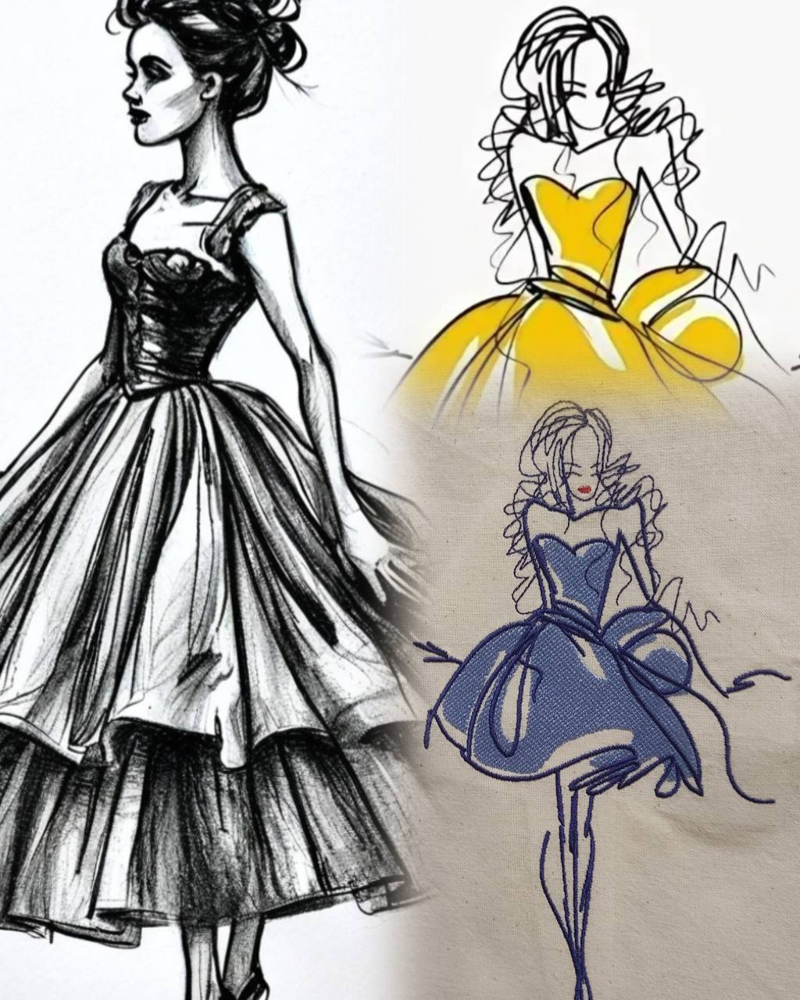
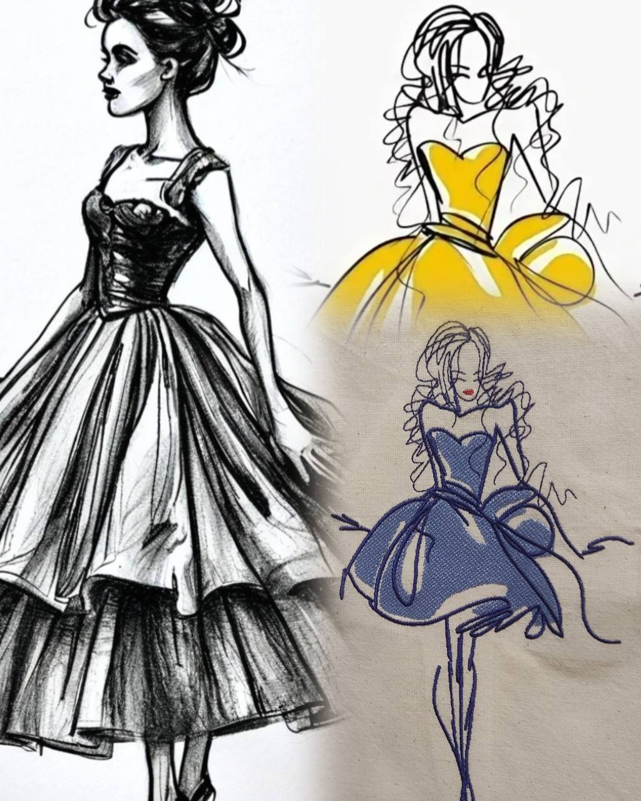

В ногу со временем: стильный шоппер с принтом. Сумки-шопперы становятся всё популярнее благодаря своей вместительности и удобству. Идею создания шопперов предложил Джаспер Мик в 1886 году, а позже они стали символом моды и заботы об экологии. Сегодня шопперыпредставлены в коллекциях таких брендов, как Gucci, Chanel и Yves Saint Laurent. Они остаются актуальными благодаря своему стилю, универсальности и вкладу в сокращение использования пластика. В рамках ФП Профессионалитет в зоне по виду работ Текстильный дизайн продолжается работа по разработке серии оригинальных принтов, специально предназначенных для вышивки и печати на сумках-шопперах. Студенты вдохновляясь различными источниками, включая природу, городскую архитектуру и поп-культуру, создают яркие и запоминающиеся принты. Каждая модель уникальна и несет в себе частичку авторского стиля. Разработанные принты идеально подойдут для тех, кто ценит оригинальность и стремится выразить свою индивидуальность через аксессуары.
 
